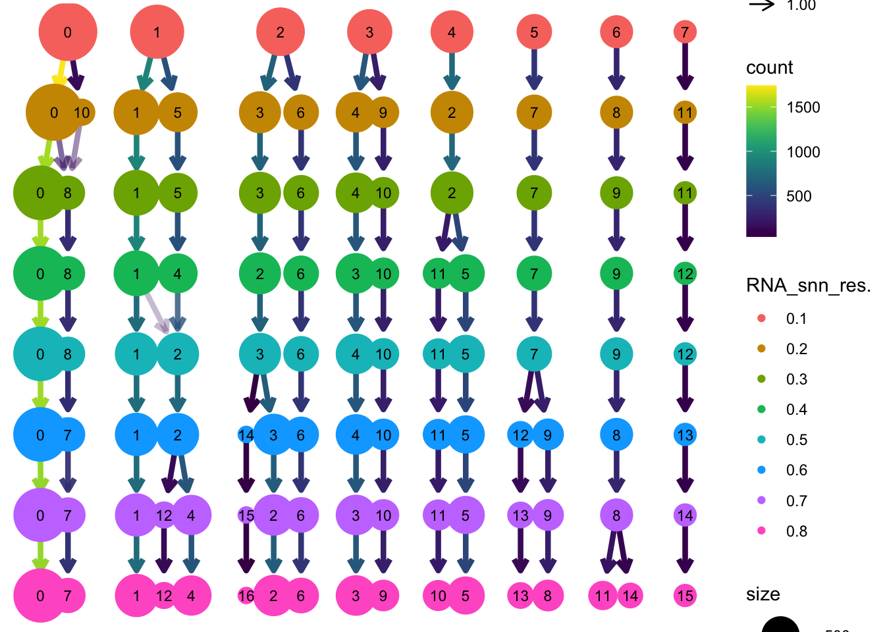
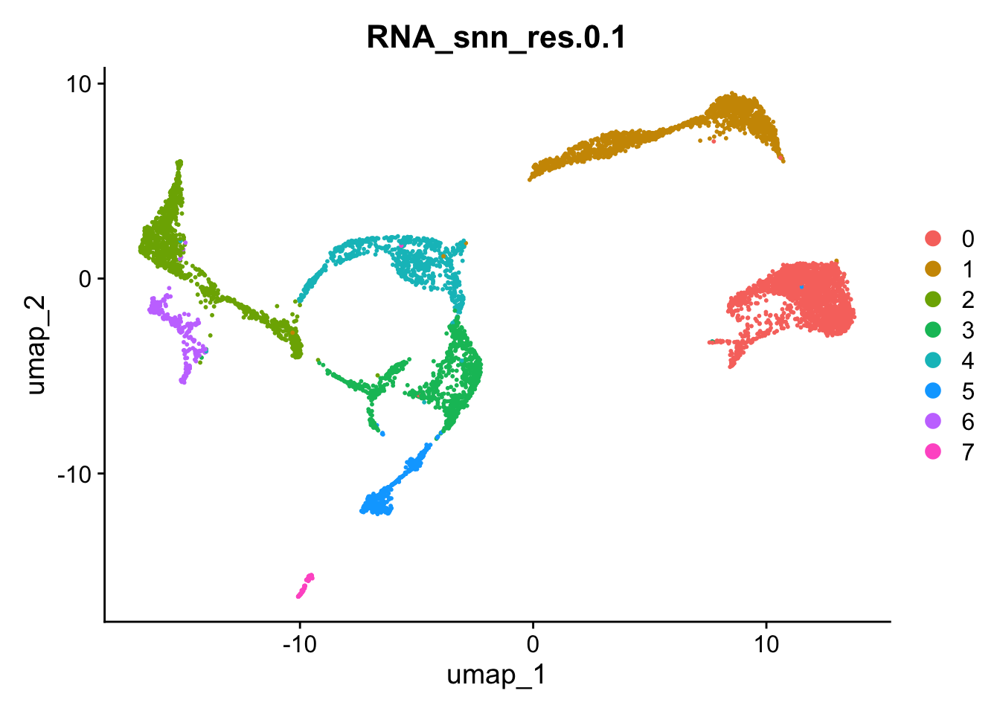

seu <- readRDS("day2/seu_day2-3.rds")Clustering
Material
- Evaluation of clustering methods
Exercises
Load the seu dataset you have created earlier today:
The method implemented in Seurat first constructs a SNN graph based on the euclidean distance in PCA space, and refine the edge weights between any two cells based on the shared overlap in their local neighborhoods (Jaccard similarity). This step is performed using the FindNeighbors() function, and takes as input the previously defined dimensionality of the dataset.
seu <- Seurat::FindNeighbors(seu, dims = 1:25, reduction = "integrated.cca")To cluster the cells, Seurat next implements modularity optimization techniques such as the Louvain algorithm (default) or SLM [SLM, Blondel et al., Journal of Statistical Mechanics], to iteratively group cells together, with the goal of optimizing the standard modularity function. The FindClusters() function implements this procedure, and contains a resolution parameter that sets the ‘granularity’ of the downstream clustering, with increased values leading to a greater number of clusters.
seu <- Seurat::FindClusters(seu, resolution = seq(0.1, 0.8, by=0.1))Cluster id of each cell is added to the metadata object, as a new column for each resolution tested:
head(seu@meta.data) orig.ident nCount_RNA nFeature_RNA percent.mito
PBMMC-1_AAACCTGCAGACGCAA-1 PBMMC-1 2401 909 2.540608
PBMMC-1_AAACCTGTCATCACCC-1 PBMMC-1 3532 760 5.181200
PBMMC-1_AAAGATGCATAAAGGT-1 PBMMC-1 3972 1215 4.934542
PBMMC-1_AAAGCAAAGCAGCGTA-1 PBMMC-1 3569 894 3.250210
PBMMC-1_AAAGCAACAATAACGA-1 PBMMC-1 2982 730 3.688799
PBMMC-1_AAAGCAACATCAGTCA-1 PBMMC-1 22284 3108 3.181655
percent.ribo percent.globin nCount_SCT nFeature_SCT
PBMMC-1_AAACCTGCAGACGCAA-1 28.65473 0.1665973 4153 911
PBMMC-1_AAACCTGTCATCACCC-1 55.03964 0.1981880 4402 759
PBMMC-1_AAAGATGCATAAAGGT-1 30.43807 0.3776435 4375 1215
PBMMC-1_AAAGCAAAGCAGCGTA-1 55.02942 0.3642477 4363 894
PBMMC-1_AAAGCAACAATAACGA-1 54.49363 0.1006036 4300 731
PBMMC-1_AAAGCAACATCAGTCA-1 23.40693 36.9682283 4545 1057
RNA_snn_res.0.1 RNA_snn_res.0.2 RNA_snn_res.0.3
PBMMC-1_AAACCTGCAGACGCAA-1 5 7 7
PBMMC-1_AAACCTGTCATCACCC-1 0 0 0
PBMMC-1_AAAGATGCATAAAGGT-1 2 3 3
PBMMC-1_AAAGCAAAGCAGCGTA-1 0 0 0
PBMMC-1_AAAGCAACAATAACGA-1 0 0 0
PBMMC-1_AAAGCAACATCAGTCA-1 4 2 2
RNA_snn_res.0.4 RNA_snn_res.0.5 RNA_snn_res.0.6
PBMMC-1_AAACCTGCAGACGCAA-1 7 7 7
PBMMC-1_AAACCTGTCATCACCC-1 0 0 0
PBMMC-1_AAAGATGCATAAAGGT-1 2 3 3
PBMMC-1_AAAGCAAAGCAGCGTA-1 0 0 0
PBMMC-1_AAAGCAACAATAACGA-1 0 0 0
PBMMC-1_AAAGCAACATCAGTCA-1 5 5 5
RNA_snn_res.0.7 RNA_snn_res.0.8 seurat_clusters
PBMMC-1_AAACCTGCAGACGCAA-1 9 8 8
PBMMC-1_AAACCTGTCATCACCC-1 0 0 0
PBMMC-1_AAAGATGCATAAAGGT-1 2 2 2
PBMMC-1_AAAGCAAAGCAGCGTA-1 0 0 0
PBMMC-1_AAAGCAACAATAACGA-1 0 0 0
PBMMC-1_AAAGCAACATCAGTCA-1 5 5 5To view how clusters sub-divide at increasing resolution:
Loading required package: ggraphLoading required package: ggplot2clustree::clustree(seu@meta.data[,grep("RNA_snn_res", colnames(seu@meta.data))],
prefix = "RNA_snn_res.")
You can view the UMAP coloring each cell according to a cluster id like this:
Seurat::DimPlot(seu, group.by = "RNA_snn_res.0.1")
Exercise
Visualise clustering based on a few more resolutions. Taking the clustering and the UMAP plots into account what do you consider as a good resolution to perform the clustering?
Answer
Of course, there is no ‘optimal’ resolution, but based on resolution of 0.3, the tree stays relatively stable for a few resolution steps, and it seems that clustering fits the UMAP well:
Seurat::DimPlot(seu, group.by = "RNA_snn_res.0.3")
Exercise
When do the number of neighbors need to be changed? How does changing the method of clustering in FindClusters affect the output? Which parameter should be changed?
Answer
As FindClusters is an unsupervised clustering method on the PCA data and UMAP is a good summary of the PCA dimension selected, clusters and UMAP plot should go along. If one has reasons to change the number of neighbors in the UMAP function, here the same parameter should be adapted.
The method can be changed with algorithm = 2,3 or 4